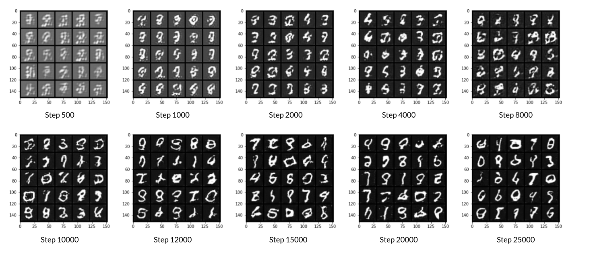

Wasserstein GAN with Gradient Penalty (WGAN-GP)
Goals
In this notebook, you’re going to build a Wasserstein GAN with Gradient Penalty (WGAN-GP) that solves some of the stability issues with the GANs that you have been using up until this point. Specifically, you’ll use a special kind of loss function known as the W-loss, where W stands for Wasserstein, and gradient penalties to prevent mode collapse.
Fun Fact: Wasserstein is named after a mathematician at Penn State, Leonid Vaseršteĭn. You’ll see it abbreviated to W (e.g. WGAN, W-loss, W-distance).
Learning Objectives
- Get hands-on experience building a more stable GAN: Wasserstein GAN with Gradient Penalty (WGAN-GP).
- Train the more advanced WGAN-GP model.
Generator and Critic
You will begin by importing some useful packages, defining visualization functions, building the generator, and building the critic. Since the changes for WGAN-GP are done to the loss function during training, you can simply reuse your previous GAN code for the generator and critic class. Remember that in WGAN-GP, you no longer use a discriminator that classifies fake and real as 0 and 1 but rather a critic that scores images with real numbers.
Packages and Visualizations
1 | import torch |
Generator and Noise
1 | class Generator(nn.Module): |
Critic
1 | class Critic(nn.Module): |
Training Initializations
Now you can start putting it all together.
As usual, you will start by setting the parameters:
- n_epochs: the number of times you iterate through the entire dataset when training
- z_dim: the dimension of the noise vector
- display_step: how often to display/visualize the images
- batch_size: the number of images per forward/backward pass
- lr: the learning rate
- beta_1, beta_2: the momentum terms
- c_lambda: weight of the gradient penalty
- crit_repeats: number of times to update the critic per generator update - there are more details about this in the Putting It All Together section
- device: the device type
You will also load and transform the MNIST dataset to tensors.
1 | n_epochs = 100 |
Then, you can initialize your generator, critic, and optimizers.
1 | gen = Generator(z_dim).to(device) |
Gradient Penalty
Calculating the gradient penalty can be broken into two functions: (1) compute the gradient with respect to the images and (2) compute the gradient penalty given the gradient.
You can start by getting the gradient. The gradient is computed by first creating a mixed image. This is done by weighing the fake and real image using epsilon and then adding them together. Once you have the intermediate image, you can get the critic’s output on the image. Finally, you compute the gradient of the critic score’s on the mixed images (output) with respect to the pixels of the mixed images (input). You will need to fill in the code to get the gradient wherever you see None. There is a test function in the next block for you to test your solution.
1 | # UNQ_C1 (UNIQUE CELL IDENTIFIER, DO NOT EDIT) |
1 | # UNIT TEST |
Success!
The second function you need to complete is to compute the gradient penalty given the gradient. First, you calculate the magnitude of each image’s gradient. The magnitude of a gradient is also called the norm. Then, you calculate the penalty by squaring the distance between each magnitude and the ideal norm of 1 and taking the mean of all the squared distances.
Again, you will need to fill in the code wherever you see None. There are hints below that you can view if you need help and there is a test function in the next block for you to test your solution.
Optional hints for gradient_penalty
1. Make sure you take the mean at the end.
2. Note that the magnitude of each gradient has already been calculated for you.
1 | # UNQ_C2 (UNIQUE CELL IDENTIFIER, DO NOT EDIT) |
1 | # UNIT TEST |
Success!
Losses
Next, you need to calculate the loss for the generator and the critic.
For the generator, the loss is calculated by maximizing the critic’s prediction on the generator’s fake images. The argument has the scores for all fake images in the batch, but you will use the mean of them.
There are optional hints below and a test function in the next block for you to test your solution.
Optional hints for get_gen_loss
1. This can be written in one line.
2. This is the negative of the mean of the critic's scores.
1 | # UNQ_C3 (UNIQUE CELL IDENTIFIER, DO NOT EDIT) |
1 | # UNIT TEST |
Success!
For the critic, the loss is calculated by maximizing the distance between the critic’s predictions on the real images and the predictions on the fake images while also adding a gradient penalty. The gradient penalty is weighed according to lambda. The arguments are the scores for all the images in the batch, and you will use the mean of them.
There are hints below if you get stuck and a test function in the next block for you to test your solution.
Optional hints for get_crit_loss
1. The higher the mean fake score, the higher the critic's loss is.
2. What does this suggest about the mean real score?
3. The higher the gradient penalty, the higher the critic's loss is, proportional to lambda.
1 | # UNQ_C4 (UNIQUE CELL IDENTIFIER, DO NOT EDIT) |
1 | # UNIT TEST |
Success!
Putting It All Together
Before you put everything together, there are a few things to note.
- Even on GPU, the training will run more slowly than previous labs because the gradient penalty requires you to compute the gradient of a gradient — this means potentially a few minutes per epoch! For best results, run this for as long as you can while on GPU.
- One important difference from earlier versions is that you will update the critic multiple times every time you update the generator This helps prevent the generator from overpowering the critic. Sometimes, you might see the reverse, with the generator updated more times than the critic. This depends on architectural (e.g. the depth and width of the network) and algorithmic choices (e.g. which loss you’re using).
- WGAN-GP isn’t necessarily meant to improve overall performance of a GAN, but just increases stability and avoids mode collapse. In general, a WGAN will be able to train in a much more stable way than the vanilla DCGAN from last assignment, though it will generally run a bit slower. You should also be able to train your model for more epochs without it collapsing.
Here is a snapshot of what your WGAN-GP outputs should resemble:

1 | import matplotlib.pyplot as plt |
1 |